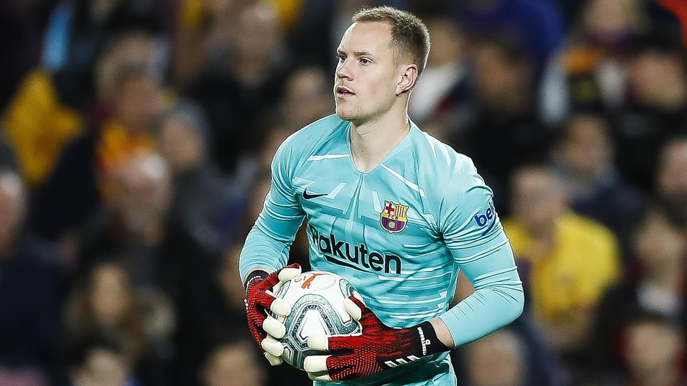
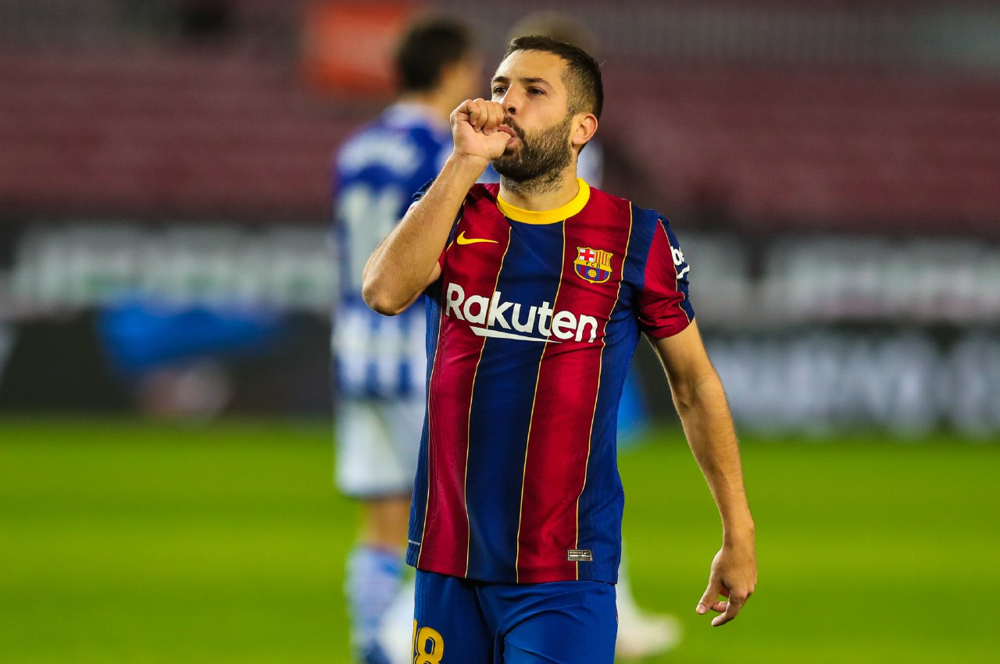

Joueurs
Gardiens
1 Marc-André Ter Stegen
13 Neto

Défenseurs
2 Sergiño Dest

3 Gerard Piqué

4 Ronald Araujo
15 Clément Lenglet

18 Jordi Alba
Milieux
5 Sergio Busquets

8 Miralem Pjanic
12 Riqui Puig
14 Philippe Coutinho

16 Pedri

21 Frenkie de Jong

Attaquants
7 Antoine Griezmann
9 Martin Braithwaite
10 Lionel Messi
11 Ousmane Dembélé
17 Trincão

22 Ansu Fati
Entraîneur
Ronald Koeman